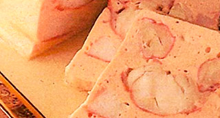

Terrina de salmón fresco y Bogavante. Teja de coral de pan frito.
"Un Paté se salmón ligero con todos los aromas de la crema de bogavente y el frescor del eneldo"

| Bogavante | 500 gr. |
| Hierbas para caldo corto | 1 un. |
| Eneldo | 1 rama |
| Laurel | 1 hoja |
| Jerez seco | 10 ml. |
| Agua mineral | 900 ml. |
| Sal marina | 50 gr. |
 |
|
| Merluza (sin piel ni espinas) | 150 gr. |
| Salmón (sin piel ni espinas) | 150 gr. |
|
|
| Chalotas | 50 gr. |
| Nata líquida | 300 ml. |
| Caparazones y corales del bogavante | - - |
| Concentrado de tomate | 1 cs. |
| Cognac | 50 ml. |
| Mantequilla | 60 gr. |
| Pimienta de cayena | 1/2 cc. |
|
|
| Clara de huevo | 4 un. |
|
|
| Harina | 30 gr. |
| Aceite girasol | 100 ml. |
| Agua mineral | 200 ml. |
| Sal | 2 gr. |
-
Bogavante
- Poner en una olla el agua, las verduras para el caldo corto, las hierbas y la sal. Llevar a ebullición.
- Una vez arranque el hervor, añadir el jerez y el bogavante y dejar cocer 5'.
- Escurrir reservando el caldo corto. Enfríar. Retírar la carne guardando los corales y caparazones.
- En una cazuela fundir la mantequilla y rehogar unos minutos las chalotas finamente picadas.
- Añádir el concentrado de tomate y los caparazones cortados del bogavante y sofreír 5' más.
- Agregar el cognac y dejar reducir casi a seco. Espolvorear con la pimienta de Cayena.
- Mojar con la nata y el caldo corto. Dejar reducir a fuego lento 5'.
- Retírar y pasar por un chino apretando bien con una mano de mortero.
- Rectificar de sal y reservar. Pescado
- Cortar la merluza y el salmón en trozos pequeños.
- Guardarlos en el frigo.
- Pasar el pescado cortado por la trituradora durante 2'. Añádir la salsa y el caldo corto, triturar 2' más.
- Mezclar las claras y los corales y triturar 2'. Probar y rectifar de sal.
- Poner esta mousse en una ensaladera.
- Cortar la carne de bogavante a trozos (al gusto) y mezclar con la mousse. Reposar en frío unos minutos. Cocción y acabado
- Precalentar el horno a 150º.
- Lavar bien los moldes, secarlos bien. Engrasar el interior con la ayuda de un pincel y un poco de aceite.
- Llenar los moldes hasta 2/3 partes. Tapar el molde.
- Colocarlas al baño María y dejar cocer durante 40'.
- Retírar del horno, dejar enfriar en ambiente y colocarla en el frigo hasta el día siguiente. Sugerencias
- Se puede comer fría, si se prefiere caliente calentarla ligeramente sin la tapa en un micro o con tapa en agua caliente fuera del horno.